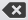
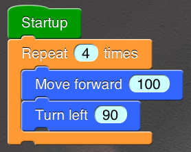
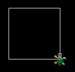
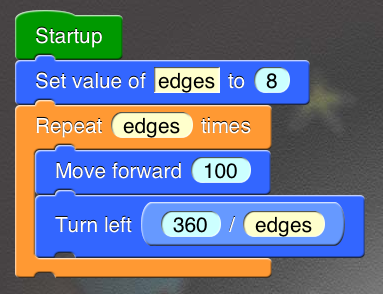
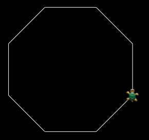

My First Program
-
Start Dynamic ART by tapping the app icon on the iPad home screen.
Dynamic ART supports both Portrait and Landscape mode of iPad. You can use it in any direction you like. -
Click "Untitled" to open Board Manager.
Board Manager is a place where you can switch among your boards. -
Enter "My first board" or any name you like in the search/edit bar.
This name will be used as the title of your first Dynamic board. -
Click button to the right of the search/edit bar. This button is used to add a new Dynamic board to your board collections.
Board Manager will be closed automatically, and now you can see the interface of your first Dynamic board.
-
Click the top-left button to open the Tool Box.
Tool Box will slip out from top. You can find all the blocks in Tool Box. Try to swicth among upper categories to browse all the blocks you have. - Switch to Category Control.
-
Drag a Startup block and drop it on your Dynamic board anywhere you like.
StartupTool Box will be disappeared temporarily as you are dragging the block. Then it will reappear after you drop the block. You can continue to pick the next block.Type: Control
This is one of the Head Blocks. All Head Blocks are in green like this one. You can connect blocks below a Head Block to form a Block Sequence. The Head Block will determine when the Block Sequence should run. Other blocks must be put in a Block Sequence , or it will never run.
This block will run its Block Sequence as soon as the program starts running.Note: you can drug out many Head Blocks, they can run at the same time without disturbing each other.
-
Drag a "Repeat" block, but do not drop it at once.
Repeat number timesType: Control
This "Repeat" block is one of the Loop blocks. You can plug other blocks into this block's inner socket to form a Sub-Block-Sequence.
When this block is running, it will run its Sub-Block-Sequence, run and run. It will let its Sub-Block-Sequence run for number times. Every time is called a "loop". -
Connect the "Repeat" block to "Startup" according to the following steps.
First, drag the block near the bottom socket of "Startup", and you will see a white indicator showing the connecting of the two blocks. The connection will be made automatically as you drop the new block onto the indicated area. -
Switch to Category Turtle. Drag a "Move forward" block, and connect it to the inner socket of "Repeat" block.
Move forward distance
Type: Turtle
Move the turtle distance pixel(s) forward. The turtle will draw a trail on the way as it is moving.
-
Drag a "Turn left" block, and connected it to the bottom socket of "Move forward" block.
Turn left angle
Type: Turtle
Turn the turtle angle degree(s) left.
- Click the top-left button to close the Tool Box.
- Click the argument in "Repeat" block. A keyboard will appear. Use key "" to clear the content. Type in "4" in the text field.
-
Your finished program should look like:

- Click the top-right button . You can see a turtle running according your commands to draw a rectangle.
-
The image drawn by the turtle should be like the following.

If not, there might be something wrong in your program. Click the top-left button to return to your Dynamic board. Then you can check your program.
- Go back to your board.
-
Drag a "Set value" block out of Category Variable, and connect it between "Startup" and "Repeat".
Set value of variable to value
Type: Variable
Set the value of the variable with name variable to value.
-
Drag a "Divide" block out of Category Expression, and connect it onto the argument in "Turn left" block.
x / yThe blocks without sockets like the "Divide" block are expressions. They can only be connected to arguments. You should follow the steps below:Type: Expression
Calculate x / y.
Warning: if y is zero, the result will be unexpected.
First, drag the block near the argument, and you will see a red indicator around the argument. The connection will be made automatically as you drop the new block onto the indicated area. - Change the first argument in "Set Value" block to "edges" or any name you like.
- Change the second argument in "Set Value" block to number "8".
-
Click the argument of "Repeat" block to edit it.
Switch the argument type above the keyboard to "Variable". Change the value to the name you choose for your variable. There are two ways to do it:- Just use the keyboard to type in the name. Make sure that it is spelt right.
- Scroll the pop-up list that appeared together with the keyboard. Find the name you want and click on it.
- Change the first argument in "Divide" block to number "360".
- Change the second argument in "Divide" block to your variable name.
-
Your program with variable should look like:
 -
Run your program again.
 - Change the value of "edges" to any positive integer you like. Enjoin the picture turtle drew on your iPad!